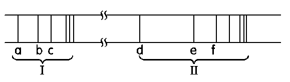

📝 題目內容
下圖為氫原子光譜中紫外光區及可見光區的譜線（a、b、c 屬紫外光區；d、e、f… 屬可見光區），試回答下列問題：

- 來曼系列位於哪一光區？
- 電子由 \(n=4\) 降至 \(n=2\) 的譜線是哪一條？
- 譜線 \(e\) 與 \(d\) 的頻率比為何？
- 巴耳麥系列第三條譜線，是電子由哪一能階降至哪一能階？
- 譜線 \(b\) 與 \(d\) 的波長比為何？
💡 詳解與步驟分析
(1) 來曼系列的光區
答：紫外光區。來曼系列落回 \(n=1\)，能量差大，位於紫外光區；巴耳麥系列落回 \(n=2\)，位於可見光區。
(2) \(n=4 \to 2\) 的譜線
巴耳麥系列依能量由小到大：\(d\,(3\to2)\)、\(e\,(4\to2)\)、\(f\,(5\to2)\)…答：譜線 e。
(3) 譜線 e 與 d 的頻率比
頻率 \(\nu \propto \Delta E\)：\(\nu_e \propto \left(\frac{1}{2^2} - \frac{1}{4^2}\right) = \frac{3}{16}\)， \(\nu_d \propto \left(\frac{1}{2^2} - \frac{1}{3^2}\right) = \frac{5}{36}\)
答：\(\nu_e : \nu_d = \frac{3}{16} : \frac{5}{36} = 27 : 20\)
(4) 巴耳麥系列第三條譜線
第一條 \(3\to2\)；第二條 \(4\to2\)；第三條 \(5\to2\)答：由 \(n=5\) 降至 \(n=2\)。
(5) 譜線 b 與 d 的波長比
波長 \(\lambda \propto \frac{1}{\Delta E}\)：\(b\)：來曼系列第二條 \((3\to1)\)，\(\Delta E_b \propto 1 - \frac{1}{9} = \frac{8}{9}\)
\(d\)：巴耳麥系列第一條 \((3\to2)\)，\(\Delta E_d \propto \frac{1}{4} - \frac{1}{9} = \frac{5}{36}\)
\(\lambda_b : \lambda_d = \Delta E_d : \Delta E_b = \frac{5}{36} : \frac{8}{9} = 5 : 32\)
答：\(\lambda_b : \lambda_d = 5 : 32\)
🎯 (1) 紫外光區 ｜ (2) e ｜ (3) 27 : 20 ｜ (4) \(5 \to 2\) ｜ (5) 5 : 32